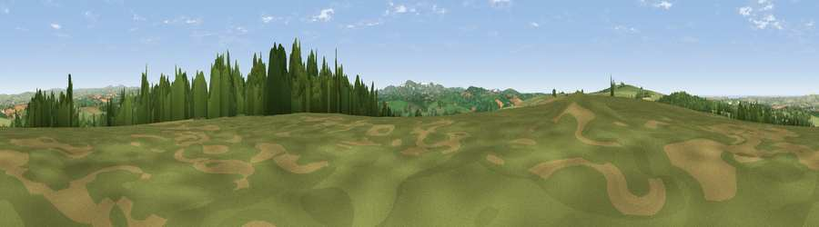

Hustyn Downs
#6964 in England · top 17% of its area beats it · near WithielThe view, rendered

A 360° render of this exact spot computed from the terrain model, tree cover and land cover — summer colours, afternoon light, calibrated against photographs of famous viewpoints. Real trees, hedges and buildings will differ in detail.
The panorama
Grey silhouette: terrain skyline in each direction (720 bearings, Earth curvature and refraction included). Dashed green: skyline with trees (+15 m) and buildings (+8 m) as obstacles. Blue strip: how far the ground is visible on each bearing.
Where the view opens
Wedge length = distance to the farthest visible ground on that bearing (vegetation-aware). Rings at 10, 25 and 50 km.
What fills the view
61% grassland · 19% cropland · 16% woodland · 2% built-up · 1% water
Angular shares of the visible panorama (visual magnitude), not map area. Landscape diversity 0.46 (0–1 Shannon).
Key numbers
More beautiful places nearby
The staircase of upgrades: each row has a higher view potential than everything closer. Driving times are estimates from straight-line distance, calibrated against real road routing — check an actual route before setting out.
| Place | Direction | Drive | Score |
|---|---|---|---|
| St Breock Beacon | W · 3 km | ~8 min | 74.5 |
| Viewpoint near Tremayne | SW · 8 km | ~16 min | 75.5 |
| Viewpoint near St Eval | W · 10 km | ~19 min | 78.3 |
| Viewpoint near Roche | S · 10 km | ~20 min | 80.9 |
| Viewpoint near Stenalees | S · 11 km | ~20 min | 88.0 |
| Viewpoint near Crackington Haven | NNE · 29 km | ~46 min | 88.1 |
| Viewpoint near Combe Martin | NE · 100 km | ~124 min | 88.9 |
| Holdstone Hill | NE · 101 km | ~125 min | 90.2 |
50.47774, -4.81918 · source: dobih hill · position refined by local search. Computed location — check access rights before visiting.